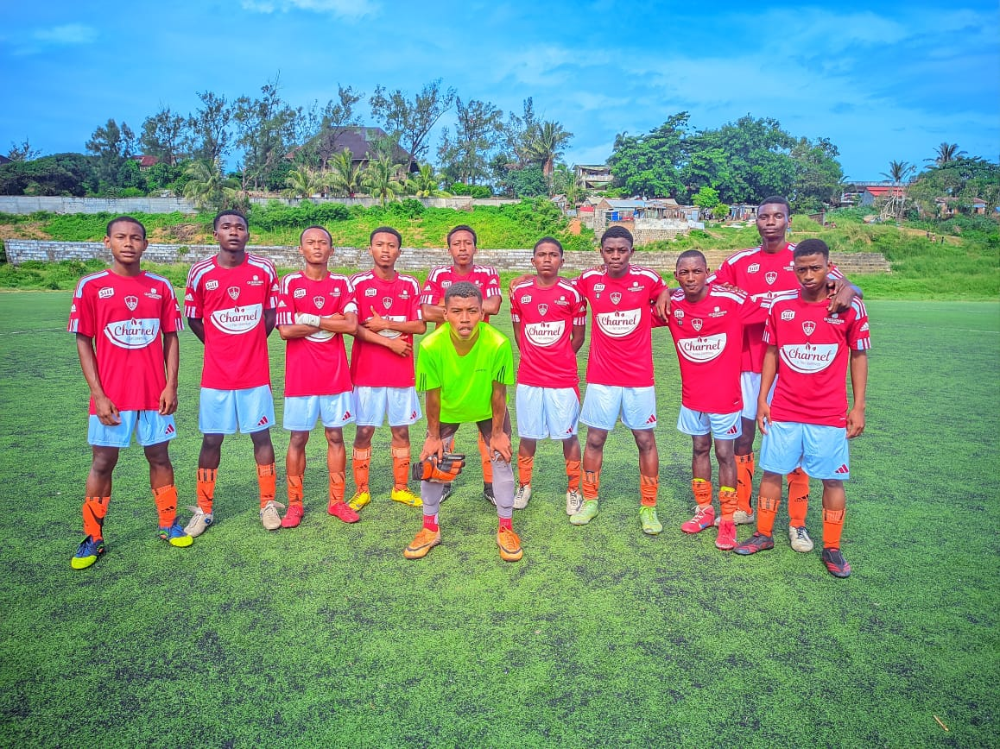
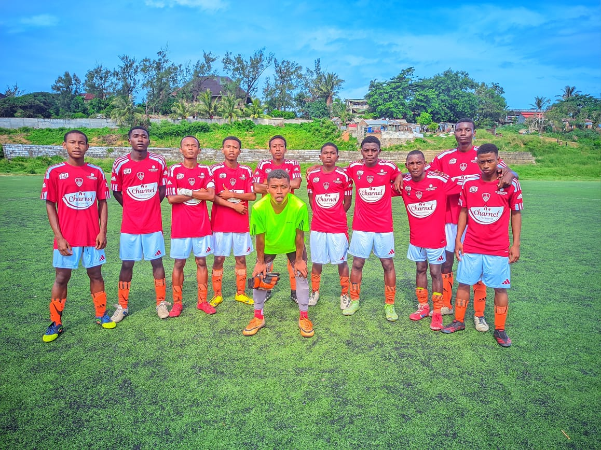

L'académie de foot Laurddi est née d'une passion commune et d'un rêve partagé. En Avril 2024,nous, Laurddi Mamitiana et Delphine Guilloux avons décidé de fonder cette académie à Fort-Dauphin dans la région d'Anosy, à Madagascar. Fort-Dauphin, c'est la ville natale de Laurddi, là où tout a commencé pour lui l'idée et oùl'idée de ce projet a naturellement pris racine. Ensemble, portés par notre amour du football,notre attachement profond à Madagascar et notre volonté d'agir pour la jeunesse, nous avons voulu crée quelque chose de concret et porteur d'avenir.
Laurddi a grandi en jouant avec de nombreux jeunes incroyablement talentieux, mais qui restent dans l'ombre faute de structures et de visibilité. En France, grâce à des rencontres avec des professionnels du football, nous avons compris qu'avant de pouvoir présenter des joueurs à des recruteurs,il fallait d'abord bâtir une structure sérieuse sur place. C'est ainsi qu'est née l'idée de créer une académie: un lieu de formation crédible, structuré, capable de mettre en lumière les talents malgaches. Après un an et demi de reflexion et de préparation, ce projet s'est concrétisé. Nous commençons à notre échelle, avec humilité, mais aussi avec une vraie ambition.
Les jeunes de la région d'Anosy regorgent de talent, mais trop peu d'entre eux ont la chance d'être repérés ou accompagnés. Dans un contexte où les opportunités sont rares, surtout dans le domaine du football, nous avons voulu créer un espace où ces potentiels peuvent enfin s'exprimer. En collaboration avec les autorités locales, notre académie vise à offrir visibilité, encadrement et espoir à toute une génération. Au-delà du sport, c'est un projet de développement: Construire des infrastructures, redonner confiance à la jeunesse, dynamiser la région et proposer une alternative saine à l'oisivité, à l'alcool, à la délinquance et à la prostitution. Le football devient ici un véritable levier d'avenir et de transformation sociale
 
